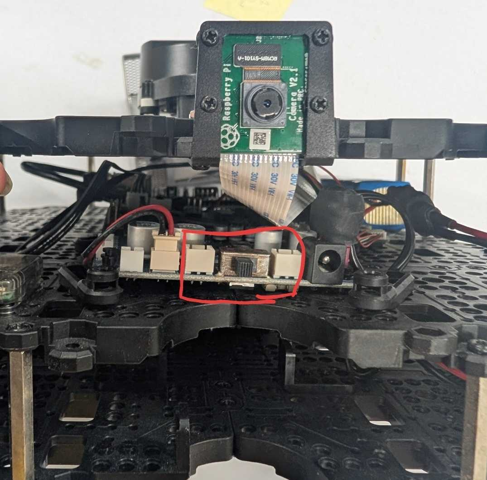
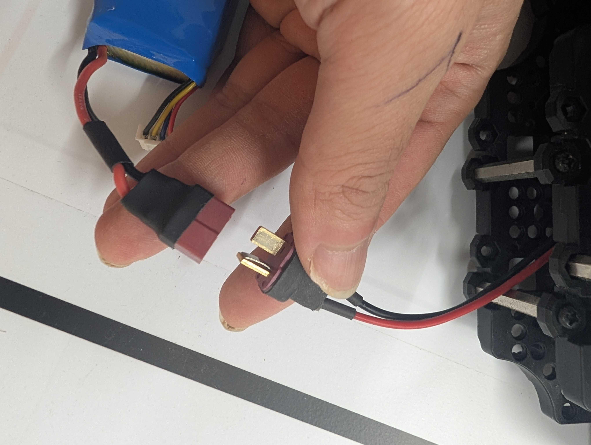
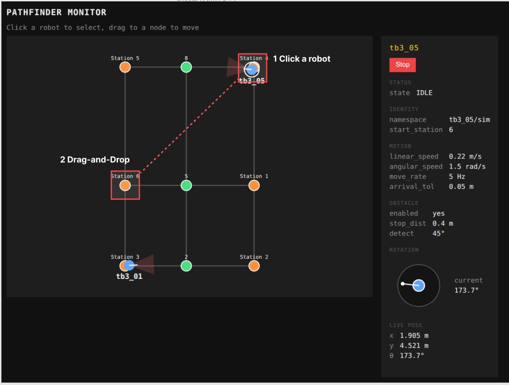
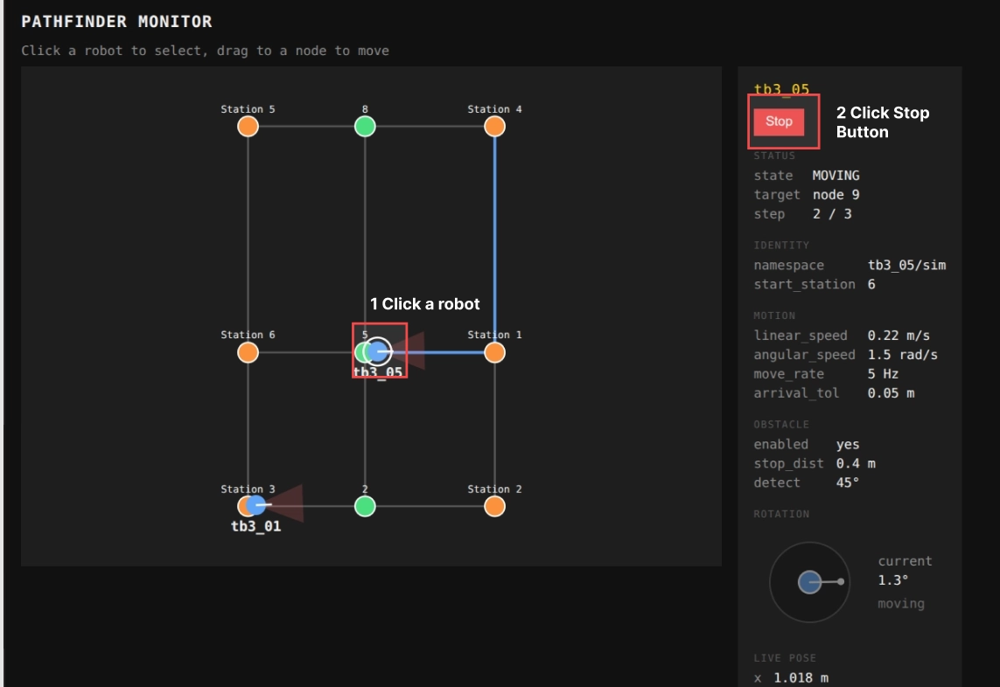
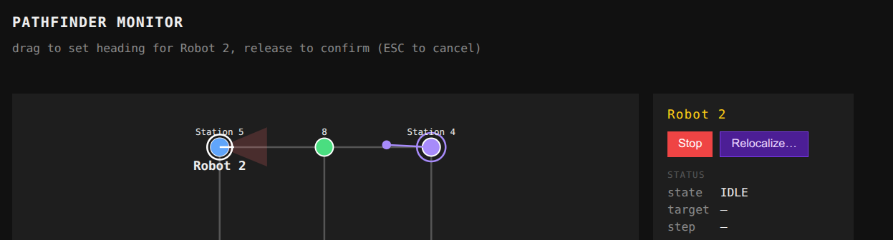

The power switch is on the front of the robot.

When the Li-Po battery is depleted, the robot halts and emits a beep sound.
The ROS server and the Web UI run on the laptop automatically. You do not need to start or stop anything by hand.
| TA | Wonseok Jang | cotidie@kaist.ac.kr |
| TA | Mingyu Seo | mg0208@kaist.ac.kr |
| TA | Sangjin Ban | sahngjin.ban@kaist.ac.kr |
Open http://localhost:5173 on the provided LG Gram laptop. The left panel shows the graph map with live robot positions; the right panel shows the selected robot’s status and controls.

MOVING, the target node, and step progress (e.g. 2 / 3).
IDLE.
Use this whenever the robot’s real location or heading no longer matches what is shown on the map, for example after physically moving the robot or powering on at a different station or angle.
| Action | How | Result |
|---|---|---|
| Power on | Flip both switches ON | Robot appears in dashboard after ~2–3 min |
| Move | Click robot → drag to node | Dijkstra path dispatched; state = MOVING |
| Stop | Click robot → press Stop | Immediate halt; state = IDLE |
| Relocalize | Click robot → Relocalize… → drag heading | Pose updated; no motion |
| Replace battery | Power off → swap battery → power on | Robot reconnects after ~2–3 min |